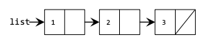

This week’s section exercises delve deep into the details of pointers and memory management in C++. This is an opportunity to get into the nitty gritty of things and to get closer towards gaining ultimate power over your computer! You will also gain valuable practice with linked lists, which are a new way of storing and organizing data that takes advantage of the power of pointers. Linked lists are definitely a tricky subject, but if you draw lots of diagrams and really nail down your pointer fundamentals, you'll be on the road to success. The topics covered in section this week will show up on assignment 6.
Remember that every week we will also be releasing a Qt Creator project containing starter code and testing infrastructure for that week's section problems. When a problem name is followed by the name of a .cpp file, that means you can practice writing the code for that problem in the named file of the Qt Creator project. Here is the zip of the section starter code:
üì¶ Starter project
For all the problems in this handout, assume the following structures have been declared:
struct Node {
int data;
Node *next;
};
1) Some Pointers on Cats
Topics: Pointer tracing and memory diagrams
Trace through the following function and draw the program’s memory at the designated spot. Indicate which variables are on the stack and which are on the heap, and indicate orphaned memory. Indicate with a question mark (?) memory that we don’t know the values of.
struct Lion {
int roar;
int *meow;
int purr[2];
};
struct Savanna {
int giraffe;
Lion cat;
Lion *kitten;
};
Lion *explore(Savanna *prairie) {
Lion *leader = &(prairie->cat);
leader->meow = new int;
*(leader->meow) = 2;
prairie = new Savanna;
prairie->cat.roar = 6;
prairie->kitten = leader;
prairie->kitten->roar = 8;
prairie->kitten->meow = &(prairie->kitten->purr[1]);
leader->purr[0] = 4;
return leader;
}
void kittens() {
Savanna *habitat = new Savanna[3];
habitat[1].giraffe = 3;
habitat[1].kitten = nullptr;
habitat[0] = habitat[1];
habitat[2].kitten = explore(habitat);
habitat[2].kitten->roar = 4;
// DRAW THE MEMORY AS IT LOOKS HERE
}
Orphaned memory (memory on the heap that we no longer have access to but that was not freed) is represented with dotted lines. For a full walkthrough of the solution, check out: https://tinyurl.com/CatsPointers.
2) What's the Code Do?
For each of the following diagrams, draw a picture of what the given nodes would look like after the given line of code executes. Does any memory get orphaned as a result of the operations? Assume the Node struct is the same as struct covered in lecture that stores integers.
Diagram 1
Code Snippet 1
list->next = new Node;
list->next->data = 3;
Diagram 2

Code Snippet 2
list->next->next = nullptr;
Example 1
This code produces one orphaned node with data 2.
Example 2
This code produces one orphaned node with data 3.
3) All out of Sorts (sorted.cpp)
Write a function that takes in a pointer to the front of a linked list of integers and returns whether or not the list that's pointed to is in sorted (nondecreasing) order. An empty list is considered to be sorted. You should implement your code to match the following prototype
bool isSorted(Node* front)
bool isSorted(Node* front) {
if (front != nullptr) {
Node* current = front;
while (current->next != nullptr) {
if (current->data > current->next->data) {
return false;
}
current = current->next;
}
}
return true;
}
4) Braiding a Linked List (braid.cpp)
Write a function braid that takes a linked list and weaves the reverse of that list into the original. (You will need to create new nodes.) Here are a few examples:
{1, 4, 2} -> {1, 2, 4, 4, 2, 1}
{3} -> {3, 3}
{1, 3, 6, 10, 15} -> {1, 15, 3, 10, 6, 6, 10, 3, 15, 1}
You should implement your code to match the following prototype
void braid(Node*& front)
Bonus: This one also has an interesting recursive solution.
void braid(Node*& front) {
Node *reverse = nullptr;
for (Node *curr = front; curr != nullptr; curr = curr->next) {
Node *newNode = new Node(curr->data);
newNode->next = reverse;
reverse = newNode;
}
// reverse now addresses a memory-independent copy of the original list,
// where all of the nodes are in reverse order.
for (Node *curr = front; curr != nullptr; curr = curr->next->next) {
Node *next = reverse->next;
reverse->next = curr->next;
curr->next = reverse;
reverse = next;
}
}